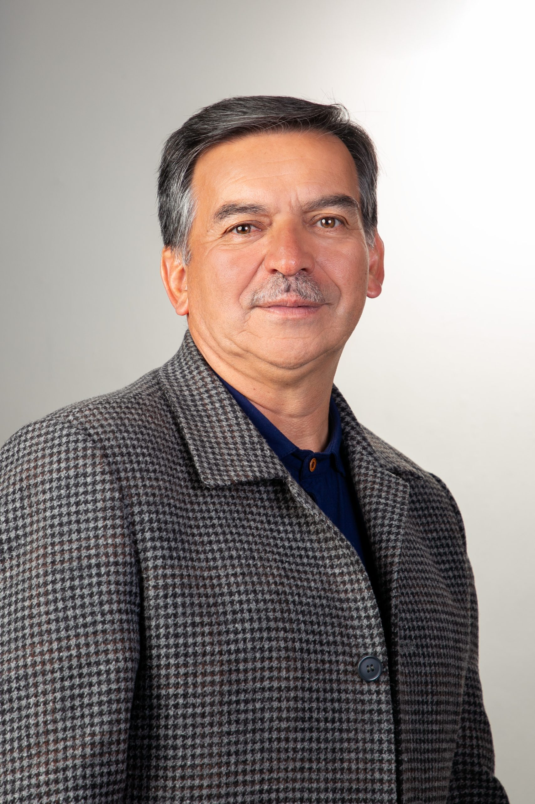

Principios, visión y enfoque de desarrollo para el territorio

Educación, participación ciudadana y desarrollo territorial como pilares de transformación social.
Una de las líneas más visibles de su trayectoria pública ha sido la defensa de la educación como herramienta para reducir desigualdades, fortalecer oportunidades y promover el crecimiento social y económico del territorio.
Ha respaldado la importancia de que las comunidades tengan un papel activo en la construcción de políticas públicas, promoviendo el diálogo entre la administración y la ciudadanía.
Su enfoque plantea que los recursos públicos deben orientarse prioritariamente hacia programas que generen bienestar, oportunidades y mejores condiciones de vida para la población.
En diferentes espacios públicos ha resaltado la necesidad de proteger los recursos naturales y promover un desarrollo que garantice equilibrio entre crecimiento económico y conservación ambiental.
Su discurso ha enfatizado la importancia de construir una sociedad con mayores oportunidades para sectores históricamente vulnerables, fortaleciendo la igualdad de acceso a servicios, educación y participación.
La perspectiva política que se asocia a su trayectoria busca combinar educación, fortalecimiento institucional, participación ciudadana y desarrollo sostenible como bases para el progreso del municipio y la región.